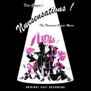

Music & Lyrics: DAN GOGGIN
 |
Original Off-Broadway Cast |
| Cast: Christine Anderson, Marilyn Farina, Semina De Laurentis, Edwina Lewis, Suzi Winson | |
| Year: 1986 Language: EN Format: mp3 Bitrate: 128kb/s | |
| Release Title: Nunsense | |
| Notes: |
 |
Original London Cast |
| Cast: Honor Blackman, Louise Gold, Pip Hinton, Anna Rees, Anna Sharkey, Bronwen Stanway | |
| Year: 1987 Language: EN Format: mp3 Bitrate: 256kb/s | |
| Release Title: | |
| Notes: |
 |
Original Swiss Cast |
| Cast: Sue Mathys, Gabriele Ramm, Josephine Cook, Dogo Hug, Susanne Peter, Sylvia Rudolf | |
| Year: 1990 Language: DE Format: mp3 Bitrate: 128kb/s | |
| Release Title: Non(n)sonse | |
| Notes: |
 |
Original Mexican Cast |
| Cast: Maru Dueñas, Marga Lopez, Laura Luz, Garda Santini, Susana Zabaleta | |
| Year: 1992 Language: ES Format: mp3 Bitrate: 128kb/s | |
| Release Title: Sor-Presas | |
| Notes: |
 |
Original Budapest Cast |
| Cast: Bencze Ilona, Hüvösvölgyi ldikó, Kiss Mari, Kökényessy Ági, Psota Irén | |
| Year: 1993 Language: HU Format: mp3 Bitrate: 256kb/s | |
| Release Title: Apácák | |
| Notes: |
 |
Original Off-Broadway Cast |
| Cast: Christine Anderson, Mary Gillis, Semina De Laurentis, Kathy Robinson, Lyn Vaux | |
| Year: 1995 Language: EN Format: mp3 Bitrate: 320kb/s | |
| Release Title: Nunsense II: The Second Coming | |
| Notes: |
 |
Original Hanau Cast |
| Cast: Hella Boysen, Connie Bunn, Petra Mathein, Jeanne-Marie Nigl, Angela Scochi | |
| Year: 1996 Language: DE Format: mp3 Bitrate: 48kb/s | |
| Release Title: Non(n)sense | |
| Notes: |
 |
Original Czech Cast |
| Cast: Ivana Andrlová, Helena Brabcová, Heidi Janků, Petra Jindrová, na Křížková, Ludmila Molínová, Světlana Nálepková, Vlasta Peterková, Regina Řandová, Dana Sedláková | |
| Year: 1997 Language: CS Format: mp3 Bitrate: 128kb/s | |
| Release Title: Jeptišky | |
| Notes: |
| World Premiere Cast | |
| Cast: Caitlin Brindisi, Mary Gant, Anna Halberg, Richard Long, Benjamin Weiss, Nathan Poland, Patrick Morrissey, Jonathan Poland, Jaclyn Schutrop, Amy Silverman, Deborah Del Mastro, Leanne Sandusky Williams, Kim Yarbrough | |
| Year: 1998 Language: EN Format: m4a Bitrate: 128kb/s | |
| Release Title: Nuncrackers | |
| Notes: |
 |
Original Czech Cast |
| Cast: Barbara Baráthová, Lenka Barilíková, Jarmila Frlickova, Vanda Konečná, Helga Kovalovská, Zuzana Mauréry, Magda Paveleková, Eva Pavlíková, Marta Potancoková, Jeanette Svonavská, Sona Valentová | |
| Year: 1999 Language: SK Format: mp3 Bitrate: 128kb/s | |
| Release Title: Mníšky | |
| Notes: |
 |
World Premiere Cast |
| Cast: Deborah Del Mastro, Susan Goeppinger, Nancy Johnston, Vicki Lawrence, Richard Long, Tinia Moulder, Jennifer Smith, Angela Timberman, Scott Wakefield | |
| Year: 1999 Language: EN Format: mp3 Bitrate: 192kb/s | |
| Release Title: Nunsense: The Jamboree | |
| Notes: Re-issue of "Sister Amnesia's Country Western Nunsense Jamboree" with alternative tracks |
 |
World Premiere Cast |
| Cast: Deborah Del Mastro, Susan Goeppinger, Nancy Johnston, Vicki Lawrence, Richard Long, Tinia Moulder, Jennifer Smith, Angela Timberman, Scott Wakefield | |
| Year: 1999 Language: EN Format: mp3 Bitrate: 192kb/s | |
| Release Title: Sister Amnesia's Country Western Nunsense Jamboree | |
| Notes: |
| Original Off-Broadway Cast | |
| Cast: Bridgette Cooper, Deborah Del Mastro, Mary Grant, Andreea Parsons, Martin Ruben | |
| Year: 2002 Language: EN Format: mp3 Bitrate: 128kb/s | |
| Release Title: Meshuggah-Nuns! | |
| Notes: |
 |
Original Berlin Cast |
| Cast: Franziska Becker, Dagmar Biener, Yara Blümel, Birge Funke, Katharine Mehrling, Bettina Meske | |
| Year: 2003 Language: DE Format: mp3 Bitrate: 192kb/s | |
| Release Title: Non(n)sens | |
| Notes: |
|  | Original Las Vegas Cast |
| Cast: Deborah Del Mastro, Bambi Jones, Carrie Keskinen, Bonnie Lee, Jeanne Tinker | |
| Year: 2005 Language: EN Format: mp3 Bitrate: 160kb/s | |
| Release Title: Nunsensations! | |
| Notes: |
 |
The National Cast |
| Cast: Rodd Bayston, Dan Foss, John Hensley, Shawn Kilgore, Reggie Whitehead | |
| Year: 2007 Language: EN Format: mp3 Bitrate: 249kb/s | |
| Release Title: Nunsense A-Men | |
| Notes: |
 |
Original Brazilian Cast |
| Cast: Rosa Marya Colin, Sílvia Massari, Marília Pera, Fafy Siquiera, Xuxa | |
| Year: 2008 Language: PT Format: mp3 Bitrate: 128kb/s | |
| Release Title: Xuxa E Es Noviças | |
| Notes: |
 |
Original Cast Recording |
| Cast: Deborah Del Mastro | |
| Year: 2009 Language: EN Format: m4a Bitrate: 308kb/s | |
| Release Title: Sister Robert Anne's Cabaret Class | |
| Notes: |
 |
Original Minneapolis Cast |
| Cast: Deborah Del Mastro, Bambi Jones, Bonnie Lee, Jeanne Tinker, Stephanie Wahl | |
| Year: 2009 Language: EN Format: mp3 Bitrate: 192kb/s | |
| Release Title: Nunset Boulevard | |
| Notes: |
 |
Original Tour Cast |
| Cast: Christine Mild | |
| Year: 2012 Language: EN Format: mp3 Bitrate: 192kb/s | |
| Release Title: Sister Robert Anne's Cabaret Class | |
| Notes: |
 |
30th Anniversary Cast Recording |
| Cast: Bambi Jones, Christine Mild, Mary Stout, Jeanne Tinker, Stephanie Wahl | |
| Year: 2013 Language: EN Format: m4a Bitrate: 269kb/s | |
| Release Title: Nunsense | |
| Notes: |